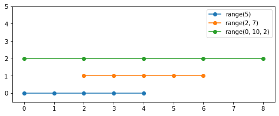

NumPy¶
Le module numpy permet le calcul numérique.
import matplotlib.pyplot as plt
import numpy as np
Créer une plage¶
La fonction np.arange crée une plage
np.arange(10)
array([0, 1, 2, 3, 4, 5, 6, 7, 8, 9])
Une plage entre deux bornes.
np.arange(5, 10)
array([5, 6, 7, 8, 9])
Avec un incrément
np.arange(10, 20, 2)
array([10, 12, 14, 16, 18])
y = np.arange(10)
plt.grid()
plt.plot(y, 'o');

Visualisation¶
y = np.zeros(5)
plt.plot(range(5), y, 'o-', label='range(5)')
plt.plot(range(2, 7), y+1, 'o-', label='range(2, 7)')
plt.plot(range(0, 10, 2), y+2, 'o-', label=range(0, 10, 2))
plt.legend()
plt.ylim(-0.5, 5)
(-0.5, 5)

y = np.zeros(5)
plt.plot(range(5), y, 'o-', label='range(5)')
plt.plot(range(2, 7), y+1, 'o-', label='range(2, 7)')
plt.plot(range(0, 10, 2), y+2, 'o-', label=range(0, 10, 2))
plt.legend()
plt.ylim(-0.5, 5)
plt.box(True)
plt.gcf().set_size_inches(8, 2)
plt.

Distribution uniforme¶
n = 500
y = np.random.rand(n)
plt.plot(y, 'o');

bins = 10
plt.hist(y, bins);
plt.axhline(n/bins, color='r');


Opérations¶
plt.plot(y, 'g', 0.5*y+1, 'r');

Matrice 2D¶
a = np.random.randint(255, size=[24, 36])
plt.imshow(a, cmap='autumn')
plt.colorbar();
plt.axis('off')
(-0.5, 35.5, 23.5, -0.5)

plt.imshow(a, cmap='gray');

NumPy¶
L’objet principal de NumPy est la matrice homogène multi-dimensionel.
Voici une liste en Python traditionnel.
y = [2, 4, 3, 6, 2]
plt.plot(y, 'o-');

Nous pouvons la transformer en tableau numpy avec la fonction np.array. Le type de l’objet est ndarray (numeric data array`.
a = np.array(y)
type(a)
numpy.ndarray
Avec un tableau numpy nous pouvons faire des opérations.
plt.plot(a)
plt.plot(a+1)
plt.plot(2-a)
plt.plot(2*a)
plt.grid()

Les attributs¶
Voici un simple tableau 2D
a = np.array([[1, 2, 1], [3, 2, 1]])
Sa dimension
a.ndim
2
Sa forme est
a.shape
(2, 3)
Sa taille est
a.size
6
a.dtype
dtype('int64')
La taille d’un élément est 8 octets (entier à 64 bits).
a.itemsize
8
Changement de forme¶
b = np.arange(15).reshape(3, 5)
b
array([[ 0, 1, 2, 3, 4],
[ 5, 6, 7, 8, 9],
[10, 11, 12, 13, 14]])
Voici la forme, taille et le type du tableau b.
b.shape, b.size, b.dtype
((3, 5), 15, dtype('int64'))
d = np.linspace(0, 2, 9)
plt.step(d, 'o-')
[<matplotlib.lines.Line2D at 0x7fa2d34cc810>]

a = np.random.rand(1000)
plt.plot(a, 'o');
a = np.random.randn(1000)
plt.ylim(-4, 4)
plt.plot(a, 'o');

x = np.linspace(-3, 3, 100)
plt.plot(x, x**3)
plt.plot(x, 2*x**2)
plt.grid()

Mandelbrot¶
def mandelbrot( h,w, maxit=20 ):
"""Returns an image of the Mandelbrot fractal of size (h,w)."""
y,x = np.ogrid[ -1.4:1.4:h*1j, -2:0.8:w*1j ]
c = x+y*1j
z = c
divtime = maxit + np.zeros(z.shape, dtype=int)
for i in range(maxit):
z = z**2 + c
diverge = z*np.conj(z) > 2**2 # who is diverging
div_now = diverge & (divtime==maxit) # who is diverging now
divtime[div_now] = i # note when
z[diverge] = 2 # avoid diverging too much
return divtime
plt.imshow(mandelbrot(400, 400));